IndustPro 4.0 was a comprehensive five-part workshop series tailored to elevate students’ professional readiness, entrepreneurial mindset, and career-building strategies. With over 650 cumulative participants, the program brought together leading industry experts, startup founders, and talent acquisition professionals to deliver insights on modern recruitment expectations, personal branding, internship success, and startup innovation.
A dynamic panel discussion featuring six top professionals from fields such as Software Engineering, DevOps, Program Management, ML Engineering, UI/UX, and Business Analysis. Moderated by Ms. Sekar Anoja from ECONSULATE, the session offered students practical career guidance, skill trends, and a post-panel networking opportunity for one-on-one industry interaction.
Led by Mr. Navinda Dissanayake (Senior Software Engineer at TWC Innovation), this session focused on portfolio development, crafting standout CVs, and LinkedIn optimization for internship success. Delivered virtually, it equipped participants with the tools to align their personal profiles with market expectations.
Conducted by Ms. Chanukah Gunawardena from IFS, this session explored the art of personal branding. Students learned how to refine their online presence, effectively network on LinkedIn, and present themselves confidently at career fairs.
Entrepreneurship took the spotlight in this session led by Ms. Nadia De Mel, Founder of SynergX & NINA. Participants were introduced to the essentials of creating compelling pitch decks, mastering storytelling, and understanding the investor mindset through real-world case studies and live feedback.
This inspiring session by Mr. Sharanyan Sharma (Founder, Prime One Global & Altitude1) explored the Sri Lankan startup ecosystem. Attendees learned about startup lifecycle stages, reasons behind failures, and strategies for pitching and scaling. A live pitching activity helped students gain hands-on experience and receive expert feedback.
IndustPro 4.0 successfully bridged the gap between academia and industry by empowering students with essential career tools, entrepreneurial insights, and industry exposure.
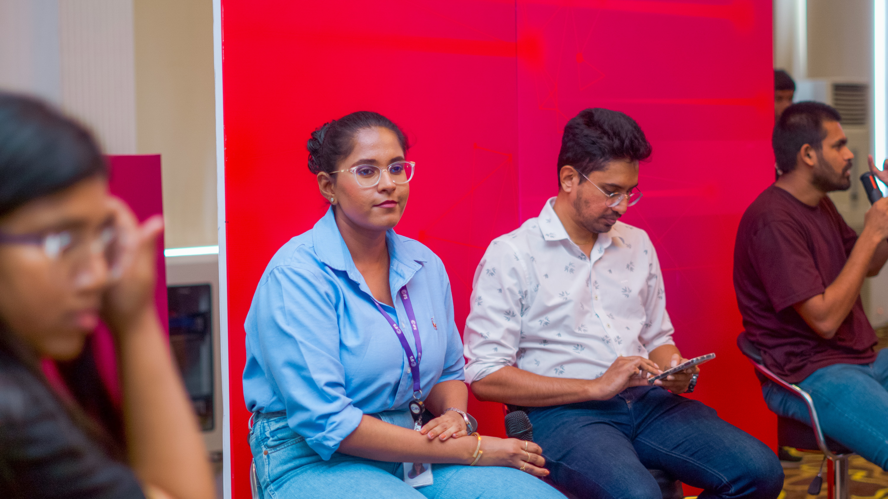
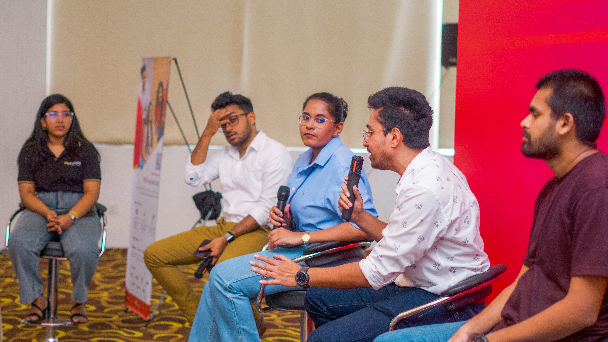
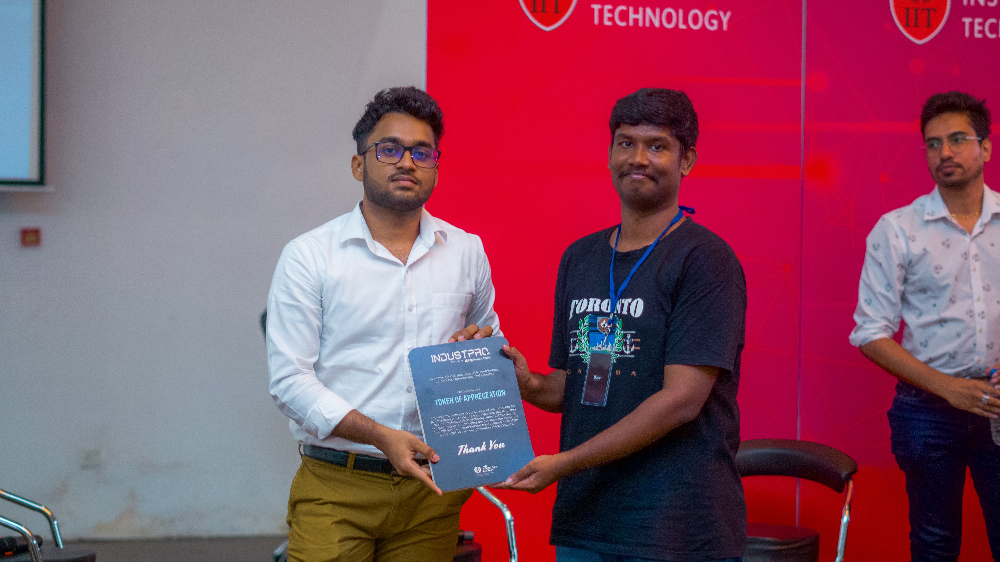
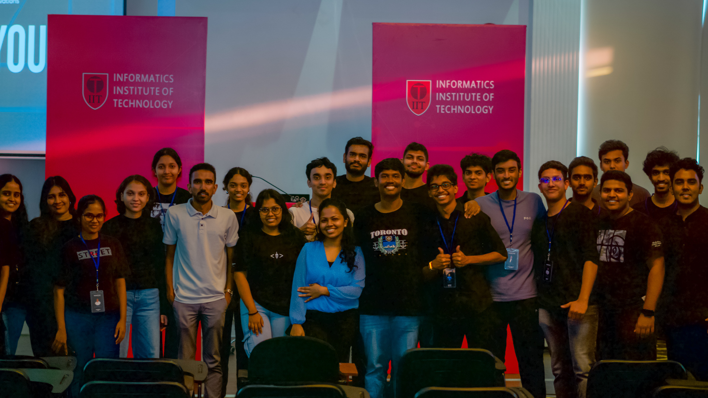
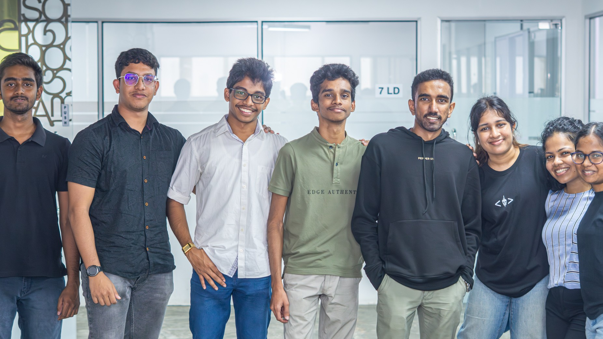
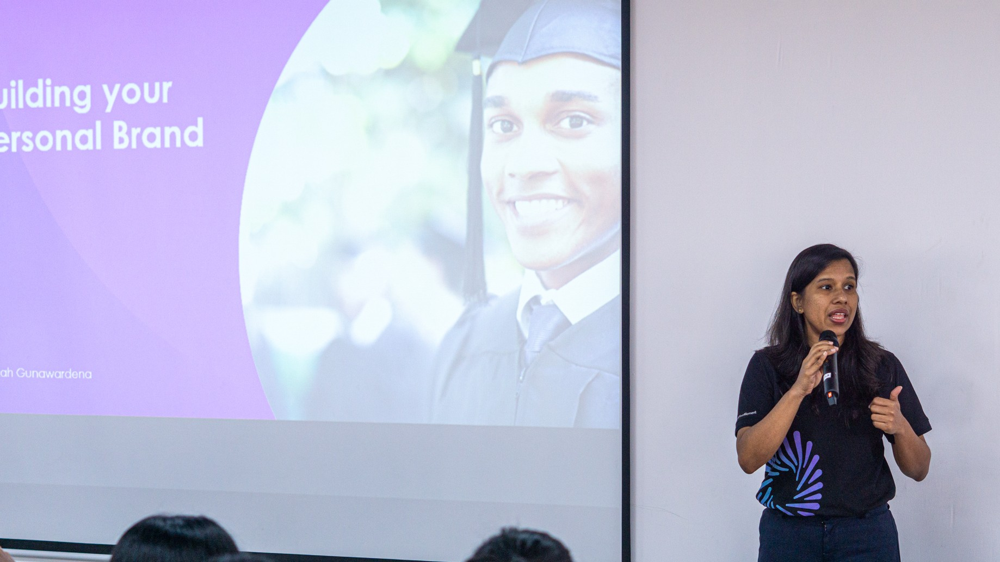
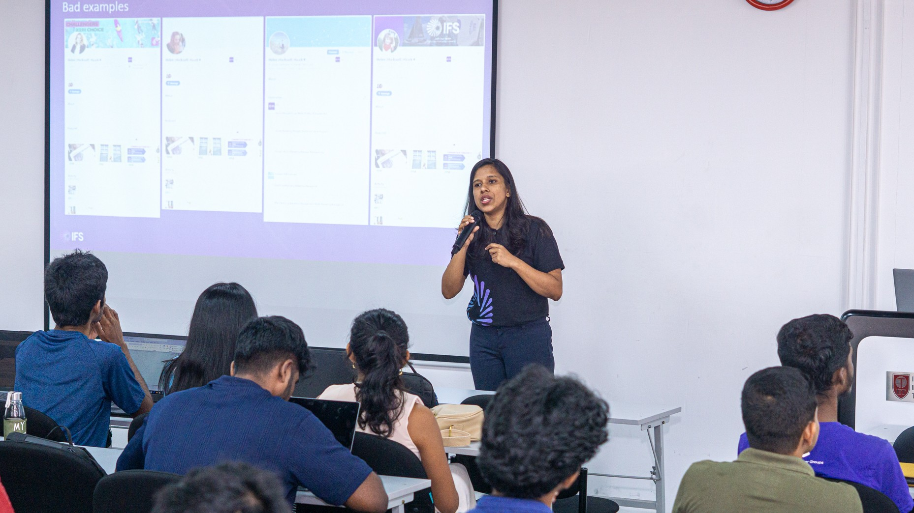
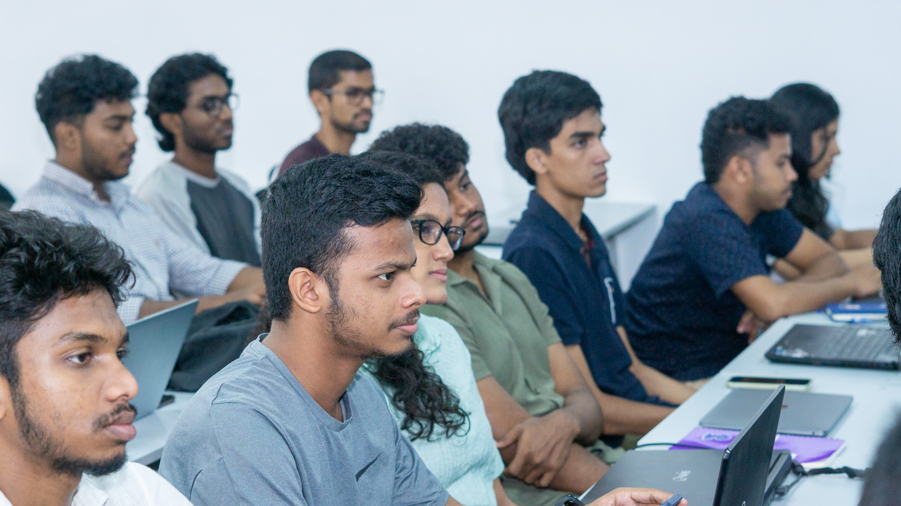
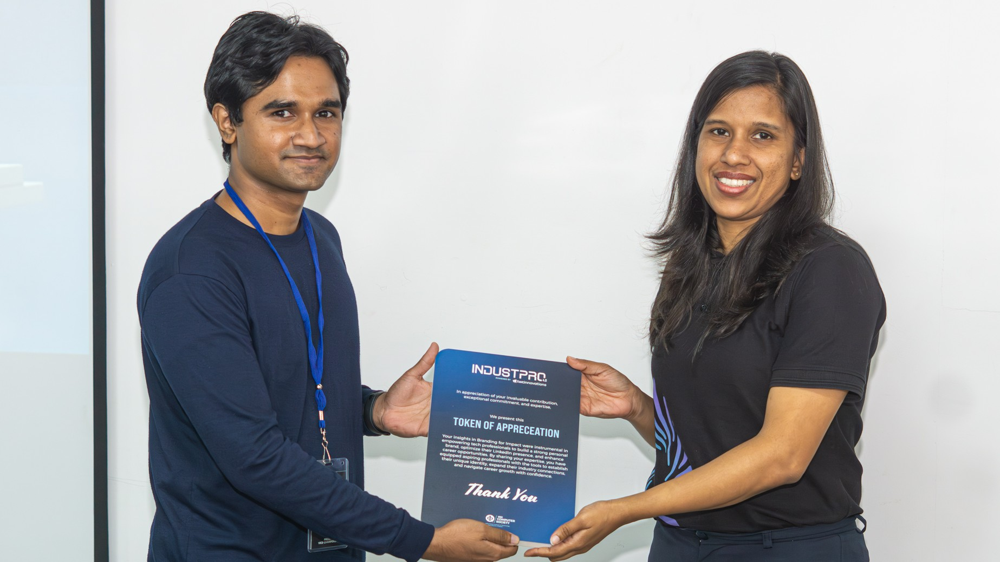
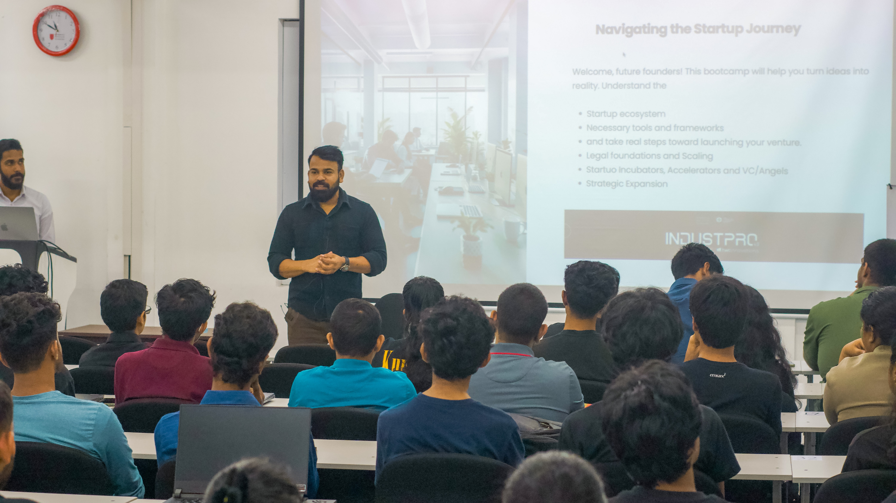
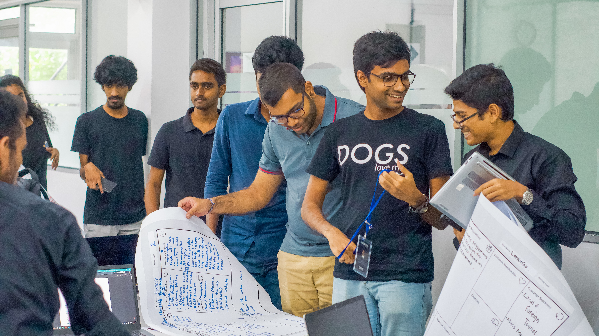
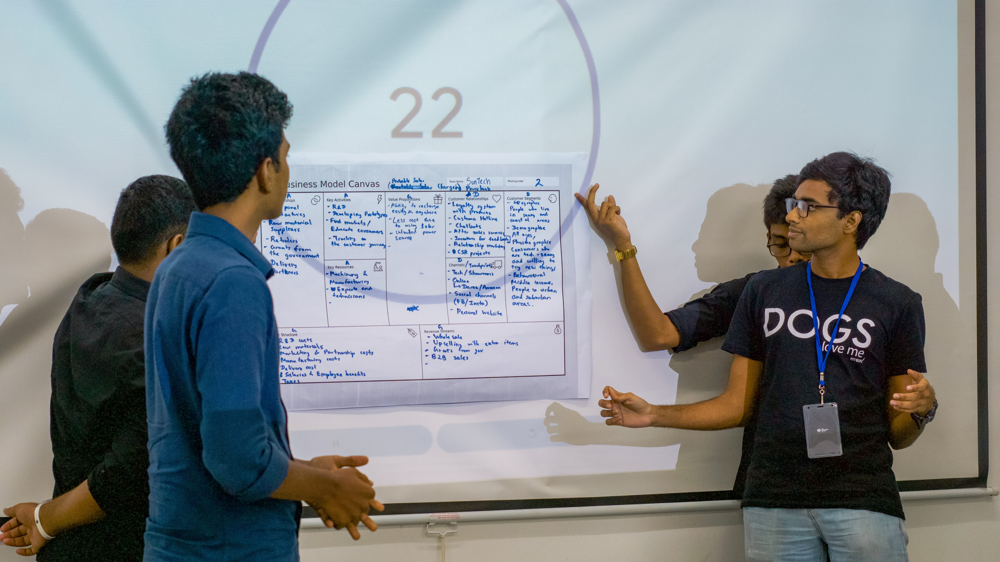
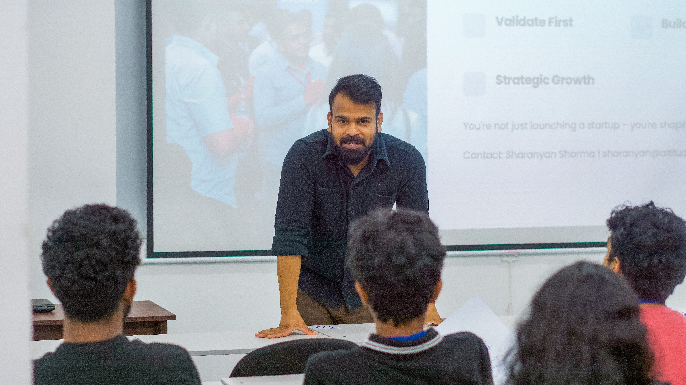
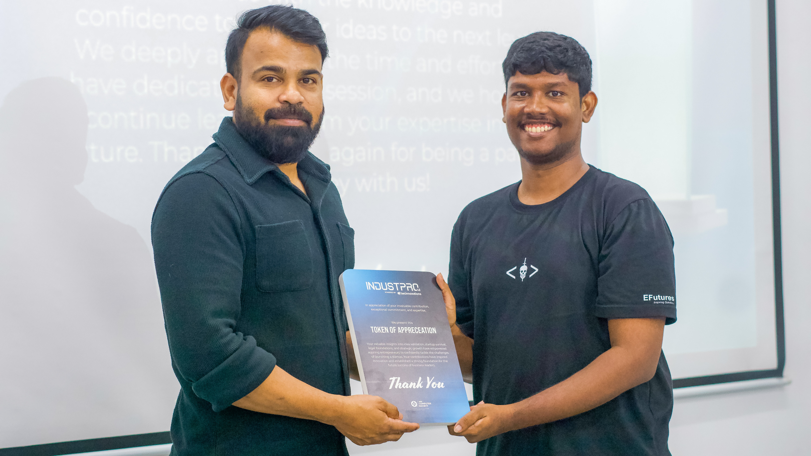
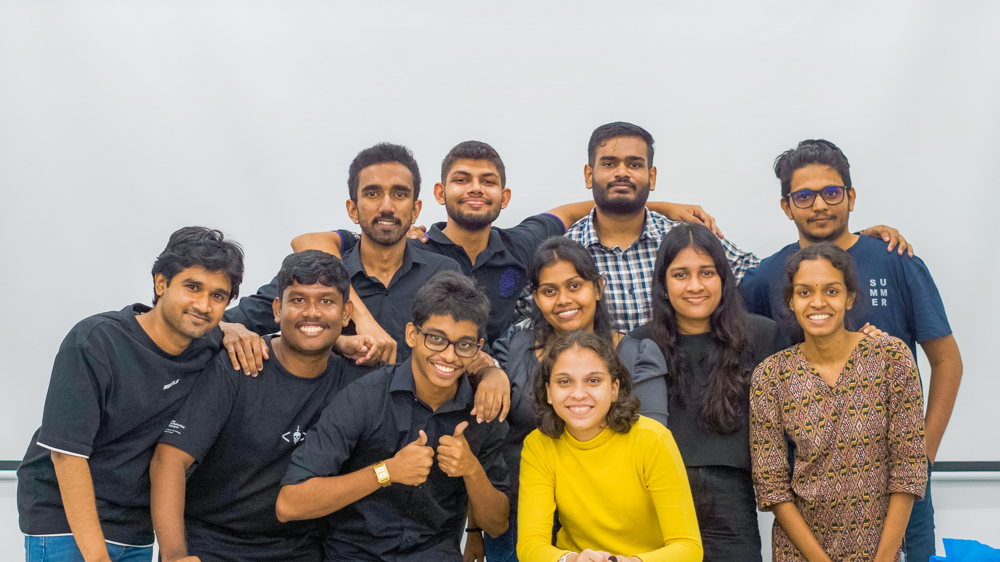
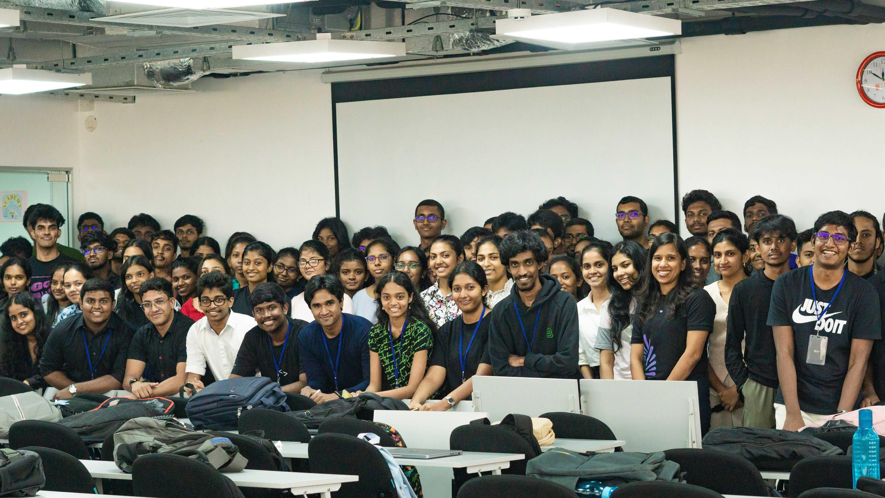